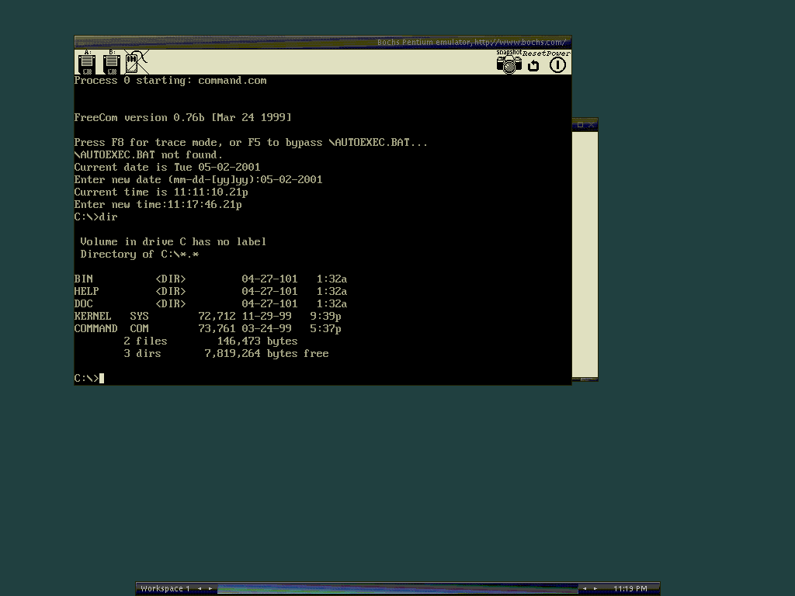

从零用 Bochs 调试你的第一个 Bootloader
Bochs 是 OS 开发圈标配的 x86 全系统模拟器，精度碾压 VirtualBox 但速度极慢。本文带你装好 Bochs、写最小 Bootloader、用内置调试器在 0x7c00 下断点单步执行，全程手敲命令。
读完这篇，你能从零搭建一个可运行、可单步调试的 Bochs 环境，写一个 512 字节的 Bootloader 让它从软盘启动，并在调试器里观察每一条指令的执行。整个流程半小时搞定，之后你就能用同样的套路跑 MIT 6.828、哈工大操作系统等经典实验。
准备：Bochs 到底是什么，为什么不用 VirtualBox
先看看它的官网上怎么定义自己——Bochs 不是虚拟机，是纯指令级模拟器。VirtualBox、VMware 走的是硬件虚拟化路线：客户操作系统直接跑在宿主机 CPU 上，VMM 只截获特权指令，性能接近原生。Bochs 则是用 C++ 把每一条 x86 指令逐条解释执行一遍，不依赖 VT-x、AMD-V 任何硬件扩展。
速度差距是数量级的——Bochs 通常只有真实机器的 1/50 到 1/100。但精度换来了一个关键能力：你可以在任意物理内存地址下断点，逐条反汇编正在执行的指令，观察每一次中断的完整处理路径，随时修改 EIP、EAX、CR3 等任何寄存器的值。
这对 OS 开发意味着什么？你写了一个 Bootloader 让它在 0x7c00 开始执行，想确认 BIOS 到底传了什么参数进来、栈指针设在哪里、中断向量表初始化了没有——这些在 VirtualBox 里要么做不了，要么代价极高。Bochs 原生支持，一个 b 0x7c00 断点就搞定。
所以如果你的目标是写操作系统内核、做底层逆向分析，Bochs 是标配；如果只是想跑个 Linux 做日常开发测试，别用 Bochs，直接上 QEMU 或 VirtualBox。

第一步：安装 Bochs
Windows 用户最简单——直接从下载页面拿官方安装包，一路点就行。安装完在安装目录下能看到 bochs.exe、bximage.exe、bochsdbg.exe 三个主要可执行文件。Linux 用户直接用包管理器，Debian/Ubuntu 一条 apt install bochs bochs-x 搞定。macOS 推荐用 Homebrew 装。
装好之后先验证一下，命令行敲 bximage，如果能弹出交互菜单就说明环境没问题。找不到的话检查一下 PATH 或者直接在安装目录里运行。
第二步：创建软盘镜像
Bootloader 的经典起步介质是 1.44MB 软盘——理由很充分：软盘的 0 道 0 头 1 扇区就是 Bootloader 的加载位置，恰好加载到物理地址 0x7c00，一切对齐，没有多余的中间层。
用 Bochs 自带的 bximage 工具创建：
bximage -q -create -fd -size 1_44M -filename boot.img-q 是静默模式，不输出进度条适合脚本。-fd 指定软盘，-size 1_44M 是标准 3.5 英寸高密度盘大小。执行完会在当前目录生成 boot.img。
软盘不需要 C/H/S 参数——这个信息已经隐含在 type 里了（1.44MB 软盘默认 80 cylinders × 2 heads × 18 sectors/track）。后面写 bochsrc 的时候直接引用就行。
如果你之后要给 Bootloader 配一个内核文件（超过 512 字节），软盘剩余空间也够放几 KB 到几十 KB 的内核。用 losetup 挂载进去 copy 就行——这个后面进阶再讲。
第三步：写一个最小 Bootloader
这步不需要你真的写汇编，理解结构就够了。Bootloader 的硬性要求只有两个：
- 长度恰好 512 字节（引导扇区的标准大小）
- 最后两个字节必须是 0x55 0xAA（BIOS 判定可引导的签名，偏移 0x1FE 和 0x1FF）
最小可用的 Bootloader 做的事情就是：在屏幕上打印一句 "Hello from Bootloader"，然后进入死循环。汇编代码大概这样：
org 0x7c00 ; BIOS 把我们加载到 0x7c00
mov ah, 0x0e ; BIOS 中断 0x10 的电传打字功能
mov al, 'H' ; 要打印的字符
int 0x10 ; 调用中断
; ... 重复打印剩余字符 ...
jmp $ ; 死循环
times 510 - ($ - $$) db 0 ; 填充到 510 字节
dw 0xAA55 ; 引导签名（注意小端序，0x55 0xAA 存成 0xAA55）用 nasm bootloader.asm -o bootloader.bin 编译得到 512 字节的 bin 文件。然后写进软盘镜像的第一个扇区：
dd if=bootloader.bin of=boot.img bs=512 count=1 conv=notruncconv=notrunc 很关键——它告诉 dd 不要截断目标文件，只覆盖前 512 字节。不加这个参数你的 boot.img 会变成 512 字节而不是 1.44MB。
第四步：写 bochsrc 配置
Bochs 用一个纯文本配置文件来描述整个虚拟硬件。新建一个 bochsrc.txt：
# 内存：32MB 足够跑我们的实验
megs: 32
# CPU：最简单的配置
cpu: model=corei7
# 全局设置
config_interface: textconfig
display_library: sdl2
# 最重要的两行：软盘和启动顺序
floppyA: type=1_44, path="boot.img", status=inserted
boot: floppy几个关键点解释一下：type=1_44 告诉 Bochs 这是标准 1.44MB 软盘，几何参数自动生效。boot: floppy 告诉 BIOS 优先从软盘启动。status=inserted 模拟软盘已插入——这些参数在 Bochs 的文档里有完整速查表，需要调硬盘或光盘配置时直接去查。
现在启动 Bochs：
bochsdbg -f bochsrc.txt注意这里用的是 bochsdbg 而不是 bochs——bochsdbg 带调试器，会在开始执行前停在命令行等你输入。这正是我们想要的。
第五步：调试你的 Bootloader
Bochs 调试器的命令和 GDB 很像，最常用的几个：
| 命令 | 作用 |
|---|---|
b <地址> | 在某个地址下断点，比如 b 0x7c00 |
c | 继续执行直到遇到下一个断点 |
s | 单步执行一条指令 |
r | 显示所有寄存器的值 |
x/10x <地址> | 从某地址开始 dump 10 个字的十六进制内容 |
u <地址> | 反汇编某地址开始的指令 |
info cpu | 显示 CPU 状态，包括段寄存器 |
启动 bochsdbg 后它会停在初始化阶段。按以下步骤操作：
- 敲
b 0x7c00设置断点——这是 BIOS 加载完 Bootloader 后跳转的位置 - 敲
c让 Bochs 继续跑，直到 BIOS 完成引导、跳转到我们的 Bootloader - 几秒后调试器会在 0x7c00 处停住——恭喜，这是你的代码第一次被执行
- 敲
r看看寄存器——特别注意 CS:IP 应该是 0x0000:0x7c00，EAX、EBX 等的值反映了 BIOS 传给 Bootloader 的参数 - 敲
u 0x7c00反汇编验证一下确实是你写的指令 - 用
s一步步单步，观察每执行一条指令后寄存器怎么变
这就是 OS 开发最核心的调试循环——写代码 → 编译 → 写进镜像 → 在 Bochs 里单步 → 观察寄存器和内存 → 回到代码修改。整个过程比在真机上烧硬盘重启快无数倍。

常见卡点
Boot failed: could not read the boot disk
这是最经典的报错。90% 的情况是你的 Bootloader 最后两个字节没写 0x55AA 签名。用十六进制编辑器打开 bootloader.bin，跳到 0x1FE 位置确认最后两个字节是不是 55 AA（注意 x86 小端序，汇编里写 dw 0xAA55）。
敲 c 之后 Bochs 没停在 0x7c00
两个可能：一是软盘配置写错了，比如 boot.img 路径不对或 status=inserted 没写，BIOS 根本没从软盘启动；二是 boot 顺序不对，BIOS 优先从硬盘启动了（而硬盘没有可引导扇区）。检查 bochsrc 里的 floppyA 和 boot: floppy 两行，确认无误。
bximage 找不到
Windows 用户：检查安装目录下有没有 bximage.exe，有的话把安装目录加到 PATH 或直接在那个目录里运行。Linux 用户：Debian/Ubuntu 用 apt install bochs 会自动带上 bximage，Fedora/CentOS 也是同理。如果是自己编译的 Bochs，bximage 会在编译目录里一起生成。
进阶：下一步可以玩什么
跑通最小 Bootloader 之后，你可以往几个方向扩展：给 Bootloader 加加载内核的逻辑（从软盘或硬盘读文件）、搭建 flat 格式的硬盘镜像（这时就要手动指定 C/H/S 参数了，bximage 创建时会打印出来抄进 bochsrc）、跑一个最小的 Linux 发行版（找一张小体积 ISO 配置成 cdrom 启动）、或者试试 sparse 格式的 undoable 模式——每次实验完删掉红日志就能回到干净状态。
对于打算认真学 OS 开发的朋友，建议直接去找 MIT 6.828 或哈工大操作系统实验的课程材料——那些实验从第一步开始就用 Bochs，每一步该做什么、bochsrc 该怎么写，都有现成的模板和说明文档。
想找现成的 bochsrc 配置模板、课程实验的完整代码样例？社区里有人整理了一份专门面向 OS 开发实验的 Bochs 配置包，同时在GitHub、Gitee、GitCode三个平台都有维护——GitHub 上版本最新更新最勤，Gitee 在国内拉取速度更快，GitCode 还做了额外的中文注释补充，三个仓库内容保持同步。